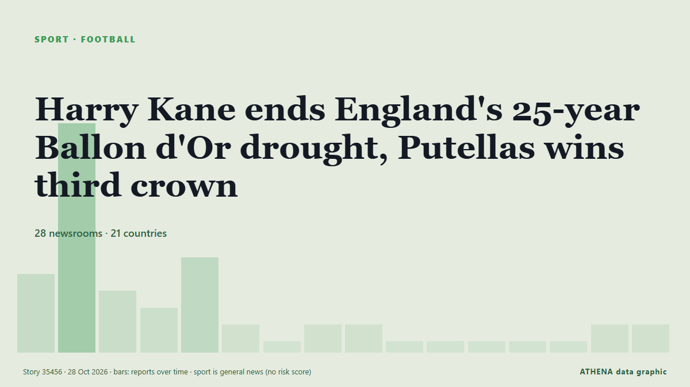

Harry Kane ends England's 25-year Ballon d'Or drought, Putellas wins third crown

Harry Kane became the first Englishman in 25 years to win the Ballon d’Or on Monday after scoring 73 goals for club and country last season. von France 24 English
Unabhängig gemeldet von 28 Medien in 21 Ländern seit dem 26. Okt., zuerst von Nile Post; die Berichterstattung ist abgeklungen. Sport und Kultur werden ohne Risikobewertung abgelegt. Die Konfidenz liegt bei 92 % (hoch): 28 Medien bestätigen es unabhängig, bei einer mittleren Verlässlichkeit der Quellen von 74 %. Wer berichtete: 4 Medien in Nigeria, 3 Medien in Frankreich · France, 2 Medien in Singapur · Singapore. Die Berichterstattung lief von 26. Okt. bis 28. Okt., über 32 Stunden.
Was sich geändert hat: 10 neue Berichte von 9 Redaktionen in den 24 Stunden bis 28. Okt..
Erste Schlagzeile: Ballon d'Or: Kane and Putellas take top awards
Schlagzeilen werden auf Englisch angezeigt, wie veröffentlicht.
Auf einen Blick
Ausgewählt, bewertet und geschrieben nach der veröffentlichten Methodik von ATHENA. Kein Redakteur greift in einzelne Ereignisse ein. So entsteht ATHENA ›
| 26 Oct 20:50 UTC | 4 |
|---|---|
| 26 Oct 22:50 UTC | 13 |
| 27 Oct 00:50 UTC | 3 |
| 27 Oct 02:50 UTC | 2 |
| 27 Oct 04:50 UTC | 5 |
| 27 Oct 06:50 UTC | 1 |
| 27 Oct 08:50 UTC | 0 |
| 27 Oct 10:50 UTC | 1 |
| 27 Oct 12:50 UTC | 1 |
| 27 Oct 14:50 UTC | 0 |
| 27 Oct 16:50 UTC | 0 |
| 27 Oct 18:50 UTC | 0 |
| 27 Oct 20:50 UTC | 0 |
| 27 Oct 22:50 UTC | 0 |
| 28 Oct 00:50 UTC | 1 |
| 28 Oct 02:50 UTC | 1 |
Warum diese Zahlen
Bedeutung
Risiko
Konfidenz
Die Berichterstattung – wer berichtete, und wann
Schlagzeile wie veröffentlicht · öffnet das Original- Nile Post · UgandaPutellas wins record-equalling third Ballon d'Or
- Vanguard · NigeriaBallon d’Or 2026: Alexia Putellas wins Best Women’s Player award for third time
- Channels TV · Nigeria[UPDATED] Alexia Putellas Wins 2026 Women’s Ballon d’Or
- CNA (Channel NewsAsia) · Singapur · SingaporePutellas wins 2026 Ballon d'Or Feminin award
- RTÉ News · Irland · IrelandBallon d'Or: Kane and Putellas take top awards
- Hespress English · Marokko · MoroccoHarry Kane wins 2026 Ballon d’Or, Alexia Putellas claims third women's title
- Evening Standard (London) · Vereinigtes Königreich · United KingdomBallon d'Or 2026: Harry Kane and Alexia Putellas win big, Arsenal star receives trophy as Spain stars dominate
- Dawn · PakistanEngland forward Kane crowned Ballon d'Or winner, Putellas wins women's award
- Arab News · Saudi-Arabien · Saudi ArabiaKane becomes first Englishman in 25 years to win Ballon d’Or and Putellas wins her third
- TheJournal.ie · Irland · IrelandHarry Kane and Alexia Putellas win Ballon d'Or awards
- Al Jazeera English · Katar · QatarEngland’s Harry Kane wins Ballon d’Or, Alexia Putellas takes women’s award
- Jamaica Observer · Jamaika · Jamaica‘Bunny’ Shaw finishes historic third in Ballon d’Or race
- Anadolu Agency (English) · Türkei · TurkeyHarry Kane, Alexia Putellas win 2026 Ballon d'Or awards in London
- France 24 English · Frankreich · FranceHarry Kane ends England's 25-year Ballon d'Or drought, Putellas wins third crown
- Punch · NigeriaPutellas wins third Women’s Ballon d’Or
- RFI English · Frankreich · FrancePutellas and Kane win 2026 Ballon d'Or as PSG retain men's team of year prize
- Korea Herald · Südkorea · South KoreaKane becomes first Englishman in 25 years to win Ballon d'Or, Putellas wins third
- CBC News (alternative feed) · Kanada · CanadaHarry Kane, Alexia Putellas capture Ballon d'Or wins
- Club of Mozambique · Mosambik · MozambiqueEngland’s Harry Kane wins Ballon d’Or, Alexia Putellas takes women’s award
- SBS News · Australien · AustraliaHarry Kane, Alexia Putellas win Ballon d'Or as England ends 25-year wait
- The Kathmandu Post · NepalEngland forward Kane crowned Ballon d’Or winner, Putellas wins women’s award
- Business Recorder · PakistanEngland forward Kane crowned Ballon d'Or winner, Putellas wins women's award
- Premium Times · NigeriaBallon d’Or: Kane, Putellas crowned world’s best footballers in London
- Jamaica Observer · Jamaika · JamaicaKane, Putellas taste Ballon d’Or glory
- Amu TV · AfghanistanHarry Kane wins first Ballon d’Or, Putellas takes women’s award for third time
- News of Bahrain · BahrainThree Times a Queen: Putellas Wins Again
- NPR · Vereinigte Staaten · United StatesHarry Kane becomes first Englishman in 25 years to win Ballon d'Or
- to vima · Griechenland · GreeceHarry Kane Wins First Ballon d’Or, Ending England’s 25-Year Wait
- France 24 English · Frankreich · FranceEngland's Kane wins Ballon d'Or, Putellas claims women's award
- CNA (Channel NewsAsia) · Singapur · SingaporePutellas completes remarkable comeback with record-equalling third Ballon d'Or
- AllAfrica · AFRAfrica: Kane, Putellas Are 2026 Ballon d'Or Winners
- AllAfrica · AFRAfrica: Kane Ends England's 25-Year Wait, Wins Ballon d'Or